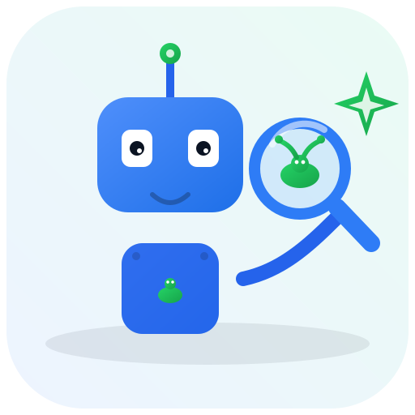
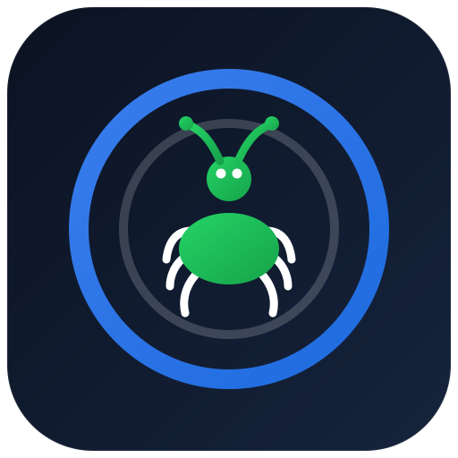
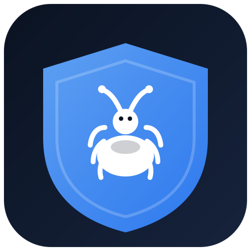
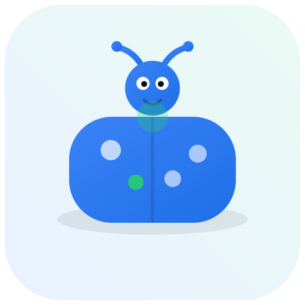
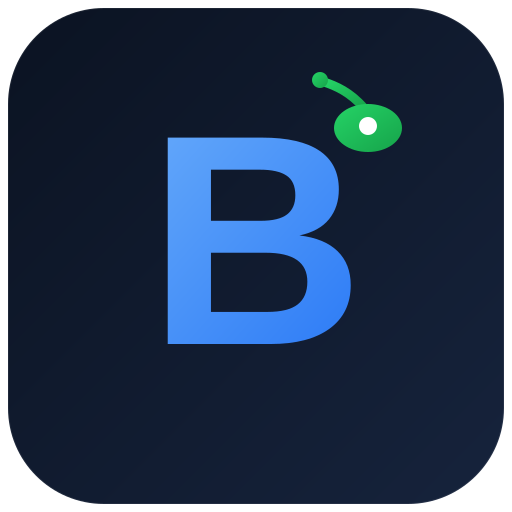
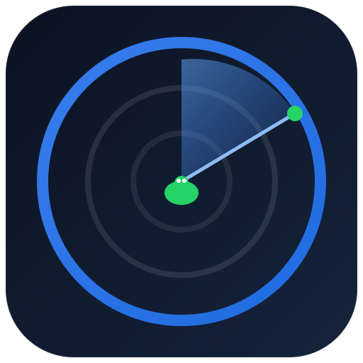

Escolha a que mais combina. Na prévia de uso você vê como ficaria na barra do topo do sistema.

7 · Robô QA com lupa 🆕
Robozinho de QA segurando uma lupa caçando um bug, com a faísca de IA. A ideia que você pediu.
AI Bug Triage

1 · Alvo / Triage
Alvo com um bug no centro. Remete a "triagem": mirar, classificar e eliminar bugs. Azul + verde da marca.
AI Bug Triage

2 · Escudo com bug
Escudo de proteção com um bug em destaque. Passa "qualidade protegida / bug caçado".
AI Bug Triage

3 · Besouro simpático
Joaninha evoluída: mascote amigável e moderno. Bom para aproximar e dar personalidade.
AI Bug Triage

4 · Monograma "B"
"B" de Bug forte em gradiente azul, com um buguinho verde no canto. Estilo de app com letra.
AI Bug Triage

5 · Radar de varredura
Radar caçando o bug (IA fazendo a varredura). Transmite a trilha de análise automática.
AI Bug Triage
6 · Bug + faísca de IA
Bug estilizado com a faísca de inteligência artificial. Fala direto "IA + bugs".
AI Bug Triage